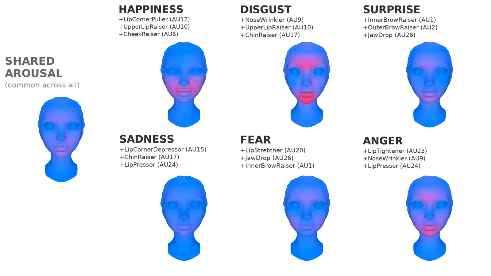

FRAME VR · Dataset and recognition
BlendME II
Dataset and recognition component of FRAME VR
BlendME II is the dataset and recognition part of FRAME VR, bringing VR-native expression capture and participant-level benchmarking into the adaptive cinema project.
- 45
- corpus participants
- 5,602
- annotated events
- 14
- elicitation videos

Expression data within FRAME VR
The BlendME II component includes 45 corpus participants, 14 elicitation videos, and 5,602 annotated events. Its compact recognition benchmark uses leave-one-subject-out evaluation and stimulus-leakage controls.
This dataset and recognition work is part of FRAME VR. It continues the VR-native capture and retrospective annotation direction introduced in BlendME.